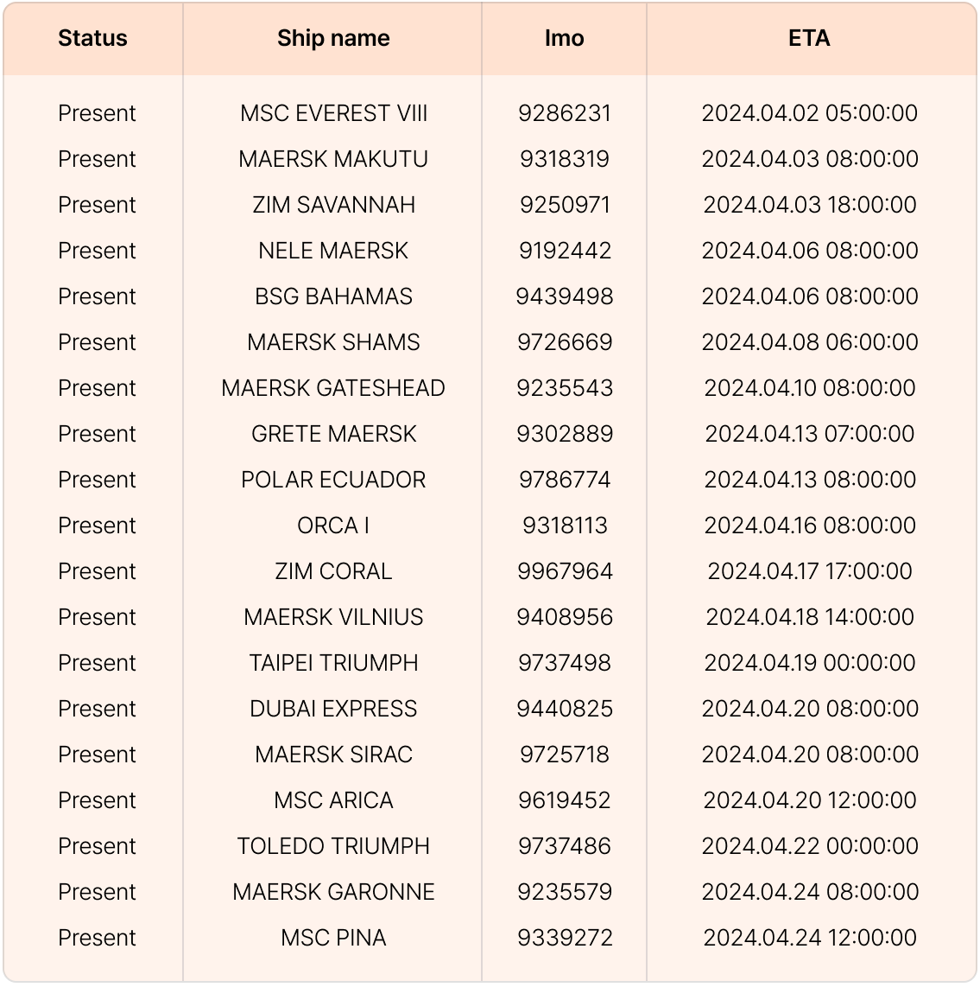
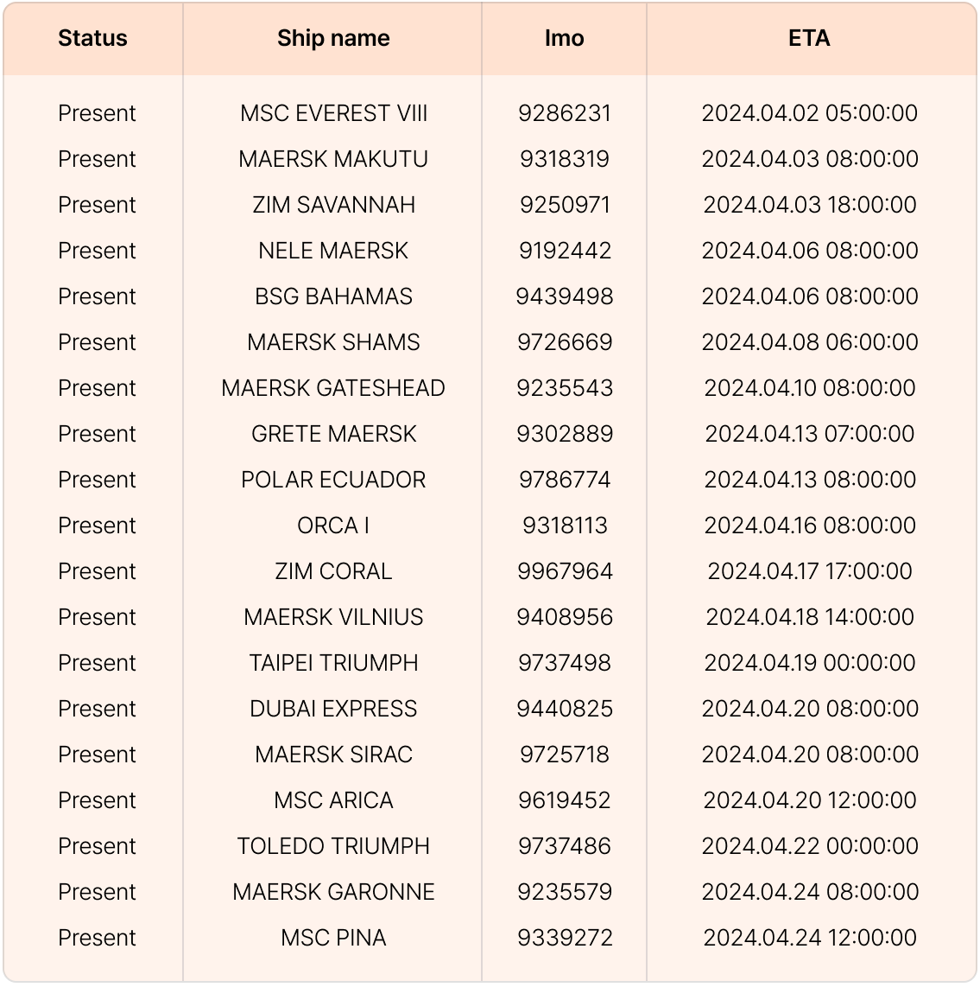

지난 2023년 12월 15일 이후, 아시아와 유럽을 잇는 홍해가 예멘 반군의 공격이 이어지면서 해운사들은 큰 고민에 빠졌습니다. 이 지역은 수에즈 운하를 통과하는 선박들에게 필수적인 경로로, 유럽, 중동, 아시아 간의 물류를 신속하게 이동시킬 수 있어 많은 해운사들이 이 경로를 택하고 있기 때문에 해운사들은 안전을 우선시해야 할지 아니면 더 긴 경로를 선택하면서 추가 비용과 시간을 감수해야 할지에 대해 결정해야 하는 어려운 상황에 놓인 것이죠.
무슨 일이 있었던걸까?프랜시스 스콧 키 다리(Francis Scott Key Bridge)가 싱가포르 선적의 대형 컨테이너선 '달리'호와 충돌하면서 볼티모어 항구로의 선박 통행이 무기한 중단되었습니다. 이 사고로 인해 현재까지 6명이 실종된 상태이며, 경제 손실은 하루에 1500만 달러에 이르면서 물류에 상당한 차질을 빚고 있습니다. 볼티모어항으로 향하던 선박들은 입항이 취소되거나, 지연되고 있으며, 대체 항로를 찾아 떠나면서 혼잡과 물류 지연이 예상됩니다.
그럼, 볼티모어항으로 향하던 선박들은?이에 저희 팀 씨벤티지는 고객사분들 외에도 모든 물류 관계자분들에게 중요한 참고 자료가 될 수 있도록 볼티모어 입항 취소 선박들과 향후 최소 가능성이 있는 선박 리스트를 준비했습니다. 볼티모어 교량 붕괴 사고에 신속하게 대응하여 추가적인 피해를 예방하시길 바랍니다.
 입항 취소된 선박 리스트

입항 취소되지 않은 선박 리스트
* 대상: BALTIMORE 항구 예정 도착일(ETA)이 3월 25일부터 4월 25일사이인 선박
* 조건: 3월 25일 이후 삭제된 선박
물류대란, 대처 방안
입항 취소된 선박 리스트

입항 취소되지 않은 선박 리스트
* 대상: BALTIMORE 항구 예정 도착일(ETA)이 3월 25일부터 4월 25일사이인 선박
* 조건: 3월 25일 이후 삭제된 선박
물류대란, 대처 방안
홍해 사태, 볼티모어 교량 붕괴 사건을 비롯해 공급망의 변동성은 앞으로도 계속 반복될 것으로 예상되는 가운데, 씨벤티지는 수출입 기업, 포워더 및 물류사 등 다양한 물류 기업들이 불확실한 글로벌 공급망 환경 속에서 현명한 결정을 내릴 수 있도록 선박, 화물, 항구의 실시간 정보를 한눈에 확인할 수 있는 빅데이터 기반 솔루션을 제공하고 있습니다. 다양한 혼란과 위기 상황에 대비하여 공급망에서 발생하는 모든 상황을 확인하고, 체계적인 대응 계획을 수립해 보세요.